МЕНЮ
Факти про ІСПАНІЮ
- Цікавий факт: Іспанія – одна з найпопулярніших країн у світі! Щорічно її відвідує понад 60 млн. туристів, які витрачають понад $55 млрд. За цим показником країна займає 2 місце після Франції.
- Мадрид – столиця Іспанії. Населення міста становить майже 3.3 млн. людей. Мадрид – головний торговий і економічний центр країни.
- Цікавий факт: футбол є національним видом спорту Іспанії. Реал Мадрид і ФК Барселона – всесвітньо відомі клуби, володарі найбільш престижних футбольних клубних нагород. Збірна Іспанії – перша команда, яка захистила свій титул чемпіона Європи.
- Цікавий факт про Іспанію: на даний момент у світі налічується 44 іспаномовних країни. Більше 100 млн. людей вивчають іспанську як другу іноземну.
- Кольори іспанського прапора символізують саме головні місцеві розваги — кориду. Жовтий колір на ньому означає пісок, а червоний — колір крові. Хоча за легендою Цар Іспанії, коли вибирав собі прапор, побачив золоте полотно. Він вмочив два пальця в кров тварин і провів по цьому полотну....
- Свято «Томатина» виникло в 1945 році, коли двоє друзів посварилися на вулиці міста Буньоль і почали кидатися помідорами. Видовище було настільки яскравим, що місцеві жителі вирішили перетворити його в яскраву традицію
- Світовим лідером за кількістю вихідних і свят є Іспанія. Відпочивати тут люблять і вміють
- Відпочинок круглий рік. В Іспанії можна відпочивати на морі цілий рік: влітку на узбережжі або на Балеарських островах, а взимку на Канарських островах. До того ж клімат на Канарах дуже стабільний. Середньорічна температура +20 без сильної спеки навіть в розпал літа, вода тепла за будь-якого сезону.
- Зручний транспорт. Іспанія - дуже зручна для мандрівників країна. У кожному більш-менш великому місті для зручності туристів є спеціальні туристичні автобуси. Купивши квиток, ви зможете протягом одного-двох днів користуватися автобусами скільки завгодно.Мережа зупинок подібних туристичних автобусів охоплює основні пам'ятки міста, дозволяючи неспішно оглянути практично все місто.
- Доброзичливі іспанці. В Іспанії может бути багато проблем, але чого ви не побачите, так це зневажливого ставлення до туристів. Тут вас не будуть хапати за руки, пропонуючи черговий сувенір з Китаю або послуги екскурсовода. Навпаки, вам з радістю допоможуть та ще й на обід запросять.
- Шопінг. Іспанія - один зі світових центрів шопінгу. В країні безліч магазинів відомих марок, регулярно проводяться тижні моди, а у великих містах ви можете знайти масу аутлетів, іноді навіть виділених в окремі "шоп-села".Якщо ви хочете придбати в подарунок сувенір з Іспанії, то краще за знамениті сири, вина, хамон і різні сувеніри-символи країни (віяла, спідниці, туфлі для фламенко) - не придумаєш. Ще з країни варто прихопити пляшку хересу, сангрії або мальвазії.
- Архітектура та історія. Іспанія - багата на пам'ятки країна. А екскурсійні тури проводяться тут цілий рік. Якщо ви людина допитливий, то ця країна стане однією з ваших улюблених для відпочинку і подорожі.
- Більше інформації

 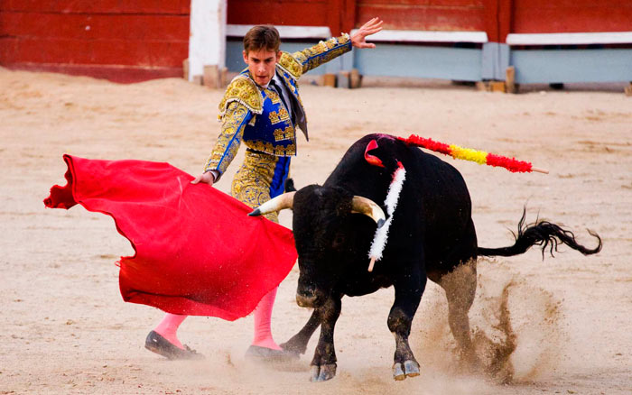
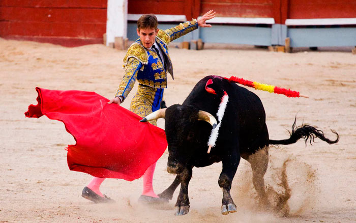

Що спробувати?
Смачна європейська кухня. Національна кухня Іспанії - це поняття абстрактне. В країні велика кількість кухонь різних регіонів, кожна з яких має свої особливості
- Паелья — страва з рису, овочів і морепродуктів родом з Валенсії.
- Пататас Бравас — смажена картопля з дуже смачним секретним соусом.
- Чорізо в сидрі — ковбаска, запечена в сидрі.
- Морсілья — кров'яна ковбаса.
- Сангрія — винний напій, настояний на фруктах.
- Чуррос — обсмажені в олії смужки тіста, за смаком нагадують наші пончики. Подаються на сніданок з розтопленим шоколадом.
- Крема Каталана — суфле з карамеллю.
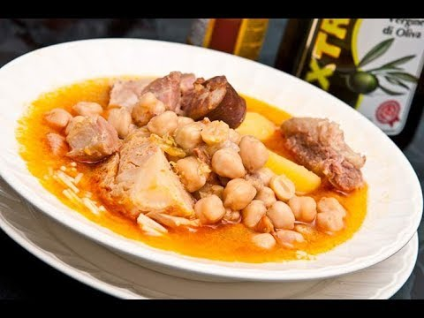
 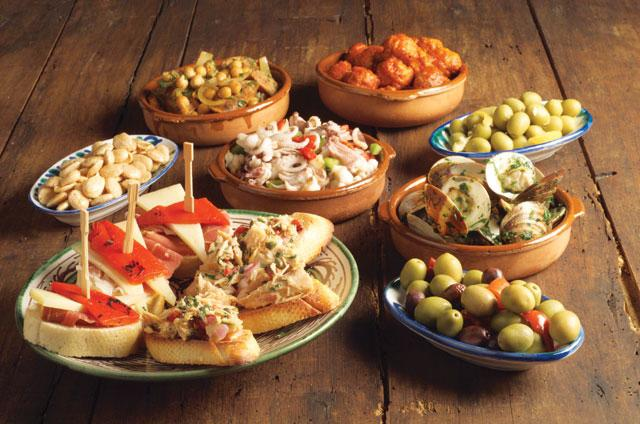
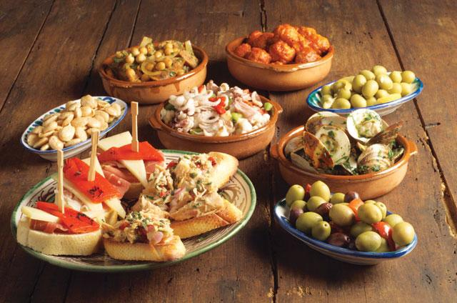
 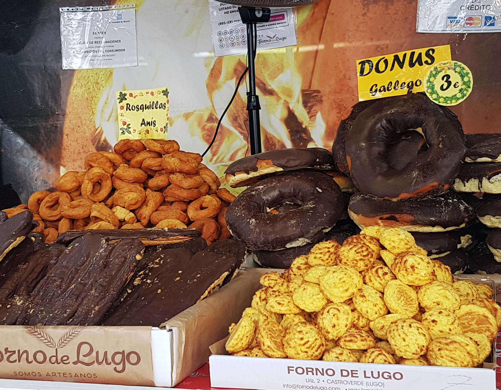
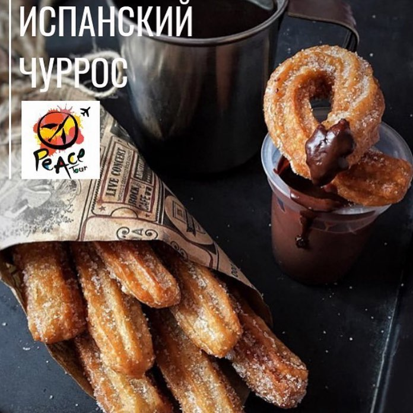
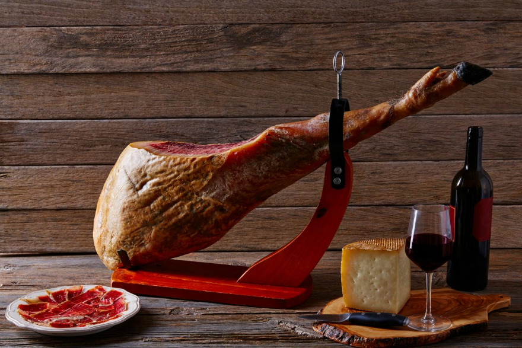
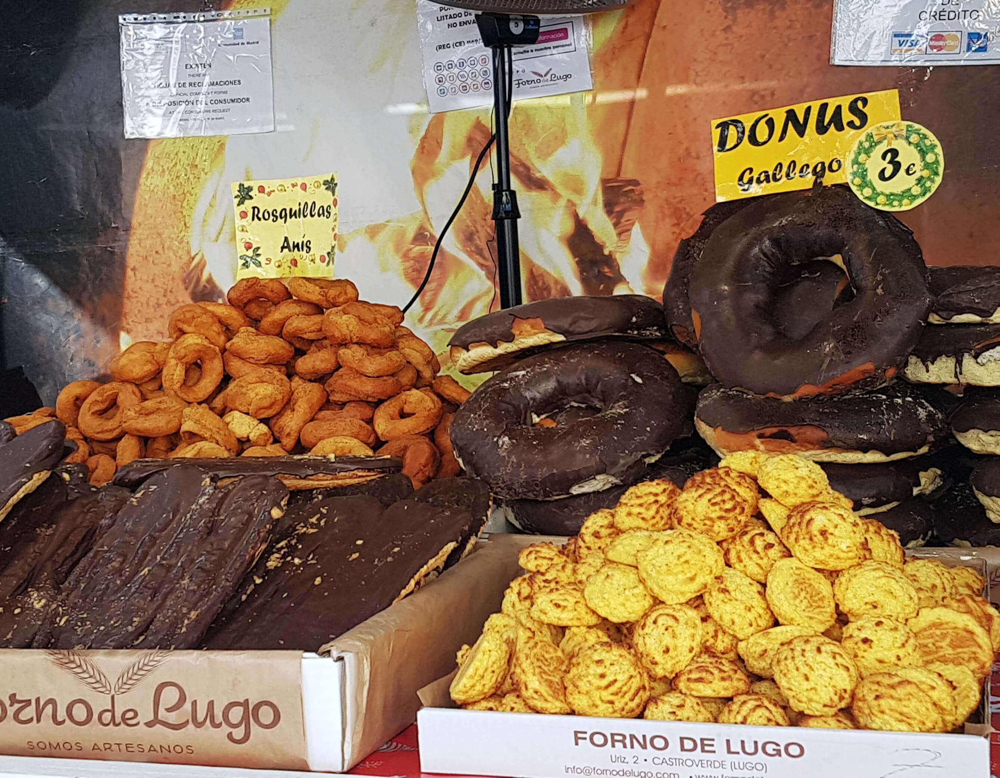
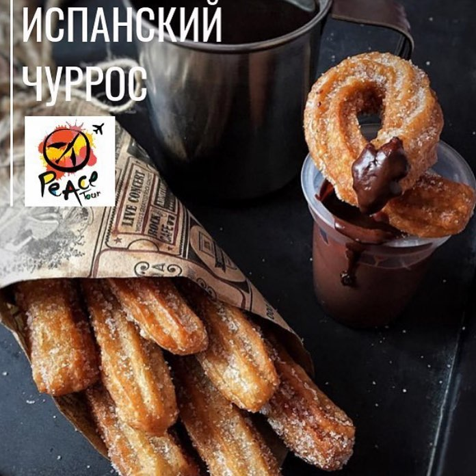
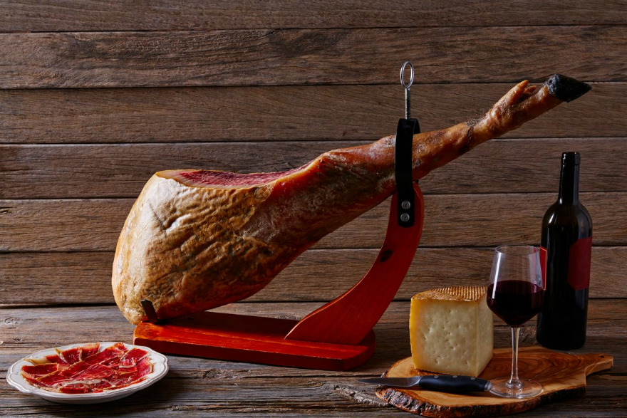

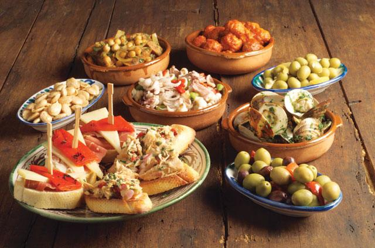